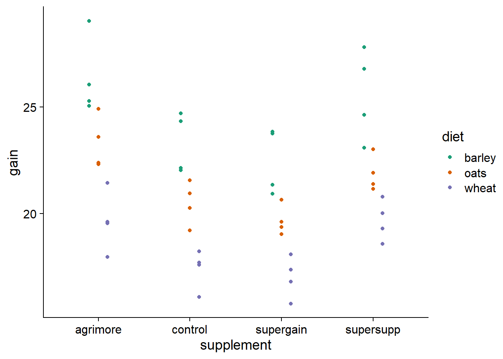
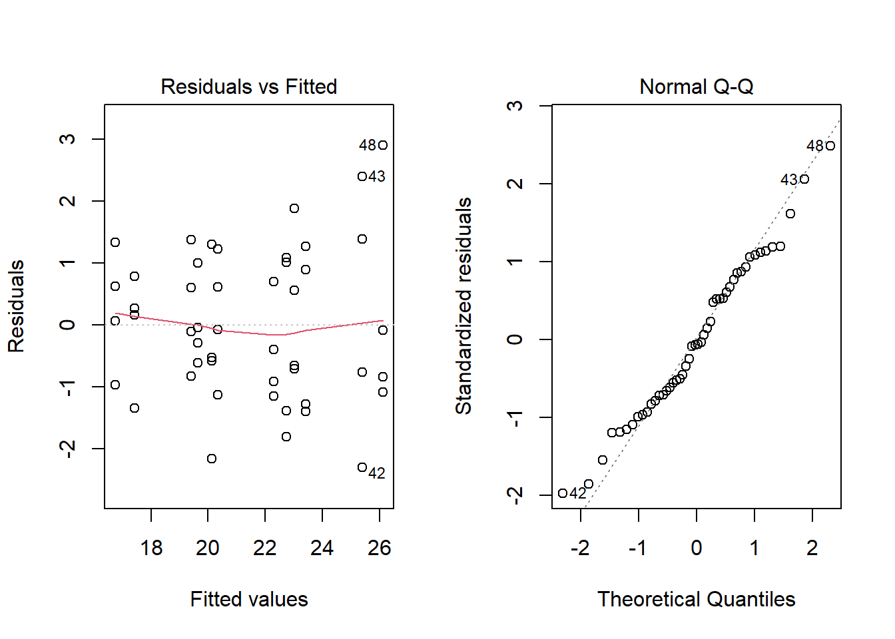
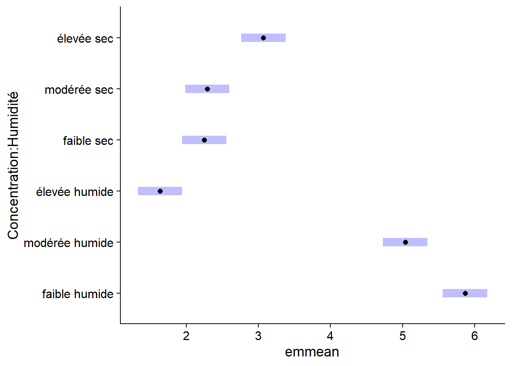
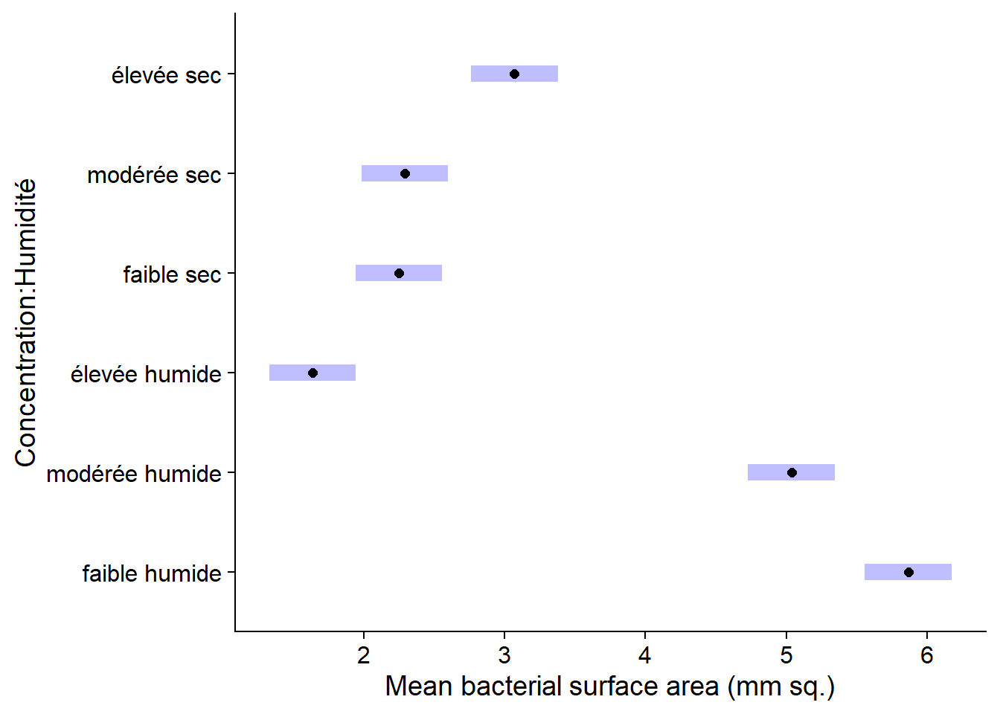
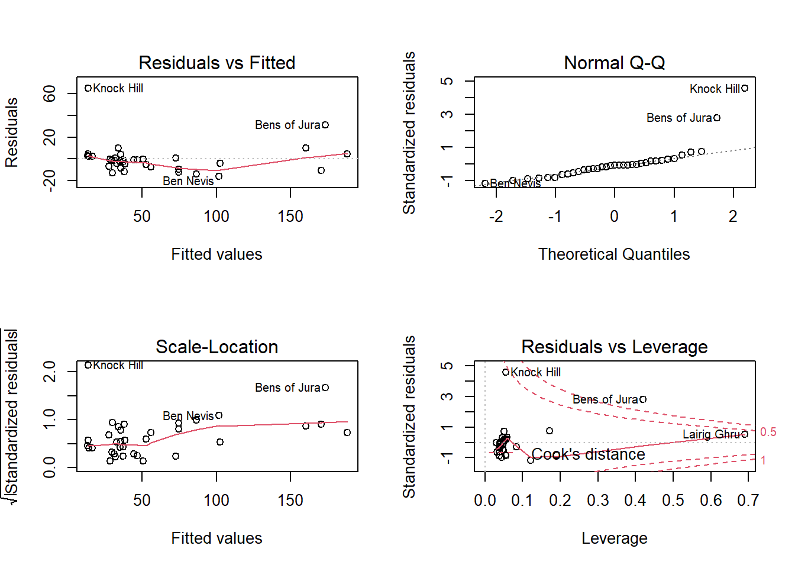
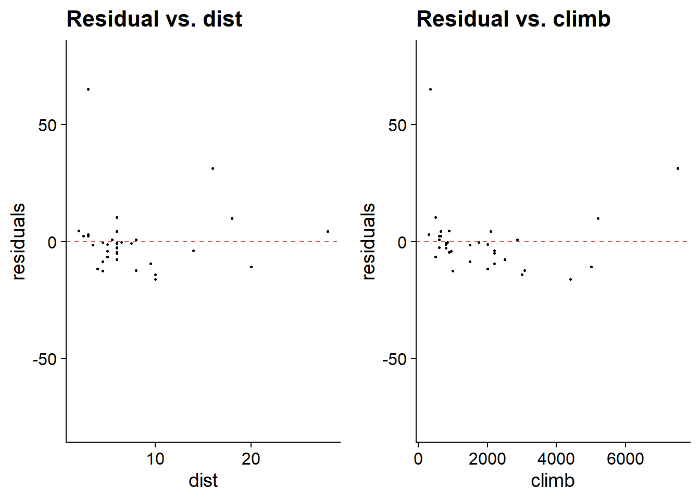

Multiple linear regression
October 14, 2020
Objectives
Estimate and interpret the parameters of a linear regression including several categorical and/or numerical variables.
Explain the meaning of an interaction between two variables and interpret its coefficient.
Use the emmeans package to compare the mean response between the different levels of a categorical variable.
Know how and why to standardize predictors in multiple linear regression.
Multiple linear regression
The multiple linear regression model represents the relationship between a response variable and \(m\) predictors \(x_1\), \(x_2\), …, \(x_m\).
\[ y = \beta_0 + \beta_1 x_1 + \beta_2 x_2 + ... + \beta_m x_m + \epsilon = \beta_0 + \sum_{i = 1}^m \beta_i x_i + \epsilon \]
As in the case of simple linear regression, the \(\beta\) coefficients can be computed from the method of least squares. In this model, each \(\beta_i\) coefficient (except \(\beta_0\)) is the partial derivative of \(y\) with respect to a predictor \(x_i\). In other words, this coefficient represents the mean difference in \(y\) associated with a change of 1 unit in \(x_i\) if all other predictors are the same.
A regression model can include multiple categorical or numerical predictors. In this class, we will present examples including:
one categorical predictor and one numerical predictor (in an experimental context, this model is called an analysis of covariance or ANCOVA);
two categorical predictors (two-way ANOVA);
two numerical predictors.
Analysis of covariance
The data frame compensation.csv is taken from Crawley’s book, Statistics: An introduction using R. It contains data on seed mass produced by a plant species (Fruit) based on root size (Root) and whether or not the plant is grazed (Grazing).
comp <- read.csv("../donnees/compensation.csv")
str(comp)## 'data.frame': 40 obs. of 3 variables:
## $ Root : num 6.22 6.49 4.92 5.13 5.42 ...
## $ Fruit : num 59.8 61 14.7 19.3 34.2 ...
## $ Grazing: chr "Ungrazed" "Ungrazed" "Ungrazed" "Ungrazed" ...Let’s first inspect the data.
ggplot(comp, aes(x = Root, y = Fruit, color = Grazing)) +
geom_point() +
scale_color_brewer(palette = "Dark2")
The graph shows the existence of a linear relationship between root size and seed production, as well as the effect of treatment: for the same root size, grazing reduces seed production. Note that if we had not measured the roots, we might think that grazing has a positive effect.
ggplot(comp, aes(x = Grazing, y = Fruit)) +
geom_boxplot()
This is because the plants undergoing grazing had (on average) larger roots initially. Root size is therefore a confounding variable, that is, one that is correlated with both the response and with the treatment being studied. It must be included in the model to properly assess the effect of grazing.
Here is a linear model where the effect of the two predictors is additive:
mod_comp <- lm(Fruit ~ Grazing + Root, data = comp)
summary(mod_comp)##
## Call:
## lm(formula = Fruit ~ Grazing + Root, data = comp)
##
## Residuals:
## Min 1Q Median 3Q Max
## -17.1920 -2.8224 0.3223 3.9144 17.3290
##
## Coefficients:
## Estimate Std. Error t value Pr(>|t|)
## (Intercept) -127.829 9.664 -13.23 1.35e-15 ***
## GrazingUngrazed 36.103 3.357 10.75 6.11e-13 ***
## Root 23.560 1.149 20.51 < 2e-16 ***
## ---
## Signif. codes: 0 '***' 0.001 '**' 0.01 '*' 0.05 '.' 0.1 ' ' 1
##
## Residual standard error: 6.747 on 37 degrees of freedom
## Multiple R-squared: 0.9291, Adjusted R-squared: 0.9252
## F-statistic: 242.3 on 2 and 37 DF, p-value: < 2.2e-16Results interpretation
If \(x_1\) is the grazing variable (0 = Grazed, 1 = Ungrazed according to the default encoding in R) and \(x_2\) is the root size, the mathematical expression of this model is:
\[ y = \beta_0 + \beta_1 x_1 + \beta_2 x_2 + \epsilon \]
To simplify the interpretation of the coefficients, we separate the case with grazing (\(x_1 = 0\)):
\[ y = \beta_0 + \beta_2 x_2 + \epsilon \]
and the case without grazing (\(x_1 = 1\)):
\[ y = \beta_0 + \beta_1 + \beta_2 x_2 + \epsilon \]
The coefficients can now be interpreted as follows:
- \(\beta_0\) (
Interceptin the summary table) is the intercept of the Fruit vs. Root regression line with grazing. - \(\beta_1\) (
GrazingUngrazed) is the effect of the absence of grazing on the intercept of the Fruit vs. Root line. - \(\beta_2\) (
Root) is the slope of the Fruit vs. Root regression line with or without grazing.
Since the slope is the same with or without grazing, the coefficient \(\beta_1\) corresponds to a translation on the \(y\) axis of the regression line. This model of the additive effects of a treatment and a numerical variable thus results in two parallel lines, which corresponds quite well to our visualization of the data. In addition, the value of \(R^2\) (0.93) indicates that the model accounts for much of the observed variation in the data.
Even a large value of \(R^2\) does not necessarily mean that the model is appropriate. We must still look at the diagnostic charts below. Except for a few extreme values in the Q-Q plot, the assumptions seem to be met.

Note that some extreme points are labelled with the corresponding row number in the data frame, to facilitate the identification of problematic points.
The \(F\)-test reported at the bottom of the results summary of lm corresponds to the null hypothesis of no effect for all predictors.
We can also obtain a conventional ANOVA table by applying the anova function to the lm result.
anova(mod_comp)## Analysis of Variance Table
##
## Response: Fruit
## Df Sum Sq Mean Sq F value Pr(>F)
## Grazing 1 2910.4 2910.4 63.929 1.397e-09 ***
## Root 1 19148.9 19148.9 420.616 < 2.2e-16 ***
## Residuals 37 1684.5 45.5
## ---
## Signif. codes: 0 '***' 0.001 '**' 0.01 '*' 0.05 '.' 0.1 ' ' 1This table shows how much of the sum of the squared differences is explained by each predictor, as well as the residual.
Order of predictors
The functions aov and anova in R treat the predictors sequentially, i.e. the effect of each predictor is calculated relative to the residuals of the model including the previous predictors. In our example, the sum of the squared deviations for the predictor Root is based on the residuals of the model including only Grazing.
This is called a “Type I sum of squares” in statistics. In particular, this means that the ANOVA table would not necessarily be the same if we change the order of the predictors, e.g.: Fruit ~ Root + Grazing. Other R packages can perform an ANOVA with Type II and III sums of squares, but these are outside the scope of this course.
As mentioned earlier, the multiple linear regression coefficients estimate the partial effect of each predictor, that is, the effect of a difference in that predictor between two cases that do not differ for any other predictor. For this reason, the order of the predictors does not influence the estimates obtained with lm.
Model with interaction
The previous model assumes that the effects of root size and grazing on seed mass are additive: in other words, the difference between the two grazing treatments is the same for each value of Root and the slope of Fruit vs. Root is the same for cases with and without grazing.
To consider the possibility that the effect of one predictor on the response depends on the value of another predictor, we need to specify an interaction between these two predictors. In R, the interaction is indicated by a multiplication symbol * between predictors in the model formula instead of the addition symbol +.
mod_comp_inter <- lm(Fruit ~ Grazing * Root, data = comp)
summary(mod_comp_inter)##
## Call:
## lm(formula = Fruit ~ Grazing * Root, data = comp)
##
## Residuals:
## Min 1Q Median 3Q Max
## -17.3177 -2.8320 0.1247 3.8511 17.1313
##
## Coefficients:
## Estimate Std. Error t value Pr(>|t|)
## (Intercept) -125.173 12.811 -9.771 1.15e-11 ***
## GrazingUngrazed 30.806 16.842 1.829 0.0757 .
## Root 23.240 1.531 15.182 < 2e-16 ***
## GrazingUngrazed:Root 0.756 2.354 0.321 0.7500
## ---
## Signif. codes: 0 '***' 0.001 '**' 0.01 '*' 0.05 '.' 0.1 ' ' 1
##
## Residual standard error: 6.831 on 36 degrees of freedom
## Multiple R-squared: 0.9293, Adjusted R-squared: 0.9234
## F-statistic: 157.6 on 3 and 36 DF, p-value: < 2.2e-16If \(x_1\) is the grazing variable (0 = Grazed, 1 = Ungrazed according to the default encoding in R) and \(x_2\) is the root size, the mathematical expression of this model is:
\[ y = \beta_0 + \beta_1 x_1 + \beta_2 x_2 + \beta_{12} x_1 x_2 + \epsilon \]
The interaction is thus equivalent to adding a new predictor to the model, equal to the product of the two interacting variables. Let’s separate again into two equations according to the treatment:
With grazing (\(x_1 = 0\)):
\[ y = \beta_0 + \beta_2 x_2 \]
Without grazing (\(x_1 = 1\)):
\[ y = (\beta_0 + \beta_1) + (\beta_2 + \beta_{12}) x_2 \]
For this model with interaction, the interpretation of the coefficients changes a bit:
- \(\beta_0\) (
Interceptin the summary table) is the intercept of the Fruit vs. Root line without grazing. - \(\beta_1\) (
GrazingUngrazed) is the effect of the absence of grazing on the intercept of Fruit vs. Root. - \(\beta_2\) (
Root) is the slope of the Fruit vs. Root line with grazing. - \(\beta_{12}\) (
GrazingUngrazed:Root) is the effect of the absence of grazing on the slope of the Fruit vs. Root line.
The interaction model is therefore equivalent to separately estimating the regression line (intercept and slope) for each of the two treatments.
Compared to the additive model, note that the effect of no grazing (GrazingUngrazed) now has a much higher standard error and a larger \(p\) value.
summary(mod_comp)$coefficients## Estimate Std. Error t value Pr(>|t|)
## (Intercept) -127.82936 9.664095 -13.22725 1.349804e-15
## GrazingUngrazed 36.10325 3.357396 10.75335 6.107286e-13
## Root 23.56005 1.148771 20.50892 8.408231e-22summary(mod_comp_inter)$coefficients## Estimate Std. Error t value Pr(>|t|)
## (Intercept) -125.1730569 12.811165 -9.7706222 1.150540e-11
## GrazingUngrazed 30.8057049 16.841823 1.8291194 7.567489e-02
## Root 23.2403732 1.530771 15.1821314 3.173208e-17
## GrazingUngrazed:Root 0.7560338 2.354111 0.3211547 7.499503e-01This is because the intercept, corresponding to Root = 0, is far from the range of the data (Root values are all between 4 and 11). Therefore, a small change of slope in the middle of the graph can lead to a significant change in intercept; the uncertainty of the interaction coefficient (difference in slope) also affects the estimate of the difference in intercept.
By consulting the ANOVA table, we can confirm that the interaction is not significant, the additive model is therefore preferable.
anova(mod_comp_inter)## Analysis of Variance Table
##
## Response: Fruit
## Df Sum Sq Mean Sq F value Pr(>F)
## Grazing 1 2910.4 2910.4 62.3795 2.262e-09 ***
## Root 1 19148.9 19148.9 410.4201 < 2.2e-16 ***
## Grazing:Root 1 4.8 4.8 0.1031 0.75
## Residuals 36 1679.6 46.7
## ---
## Signif. codes: 0 '***' 0.001 '**' 0.01 '*' 0.05 '.' 0.1 ' ' 1Why is the effect of grazing significant here while the GrazingUngrazed coefficient was not significant in the lm result? In the ANOVA table, we test whether there is a significant difference in the mean of Fruit between plants that are grazed or not, rather than whether there is a significant difference in intercept between two lines (which is what GrazingUngrazed measures in the linear model).
Two-way ANOVA
Example
To illustrate two-way ANOVA, we will first use the growth.csv dataset from the textbook Statistics: An Introduction Using R. The experiment compares the weight gain of 48 animals following three types of diet with four types of supplements. There are 12 groups (all combinations of the 3 diets and 4 supplements) of 4 individuals each.
growth <- read.csv("../donnees/growth.csv")
str(growth)## 'data.frame': 48 obs. of 3 variables:
## $ supplement: chr "supergain" "supergain" "supergain" "supergain" ...
## $ diet : chr "wheat" "wheat" "wheat" "wheat" ...
## $ gain : num 17.4 16.8 18.1 15.8 17.7 ...ggplot(growth, aes(x = supplement, y = gain, color = diet)) +
# position_dodge puts horizontal space between points of different colors
geom_point(position = position_dodge(width = 0.3)) +
scale_color_brewer(palette = "Dark2")
At first glance, it seems plausible that the effects of the diet and the supplement are additive, since the difference between the diets is similar from one supplement to another and the difference between the supplements is similar from one diet to another. Moreover, the ANOVA table of the model with interaction does not show a significant effect of this interaction:
aov_growth_inter <- aov(gain ~ diet * supplement, data = growth)
summary(aov_growth_inter)## Df Sum Sq Mean Sq F value Pr(>F)
## diet 2 287.17 143.59 83.52 3.00e-14 ***
## supplement 3 91.88 30.63 17.82 2.95e-07 ***
## diet:supplement 6 3.41 0.57 0.33 0.917
## Residuals 36 61.89 1.72
## ---
## Signif. codes: 0 '***' 0.001 '**' 0.01 '*' 0.05 '.' 0.1 ' ' 1Note that it is possible to use the aov function here because we only have categorical variables and the sample is balanced (4 replicates for each combination of diet and supplement).
Here are the results of the additive model. Both factors have a significant effect, and diet explains a larger portion of the variance in weight gain (based on the sum of the square deviations) than the supplement.
aov_growth_add <- aov(gain ~ diet + supplement, data = growth)
summary(aov_growth_add)## Df Sum Sq Mean Sq F value Pr(>F)
## diet 2 287.17 143.59 92.36 4.20e-16 ***
## supplement 3 91.88 30.63 19.70 3.98e-08 ***
## Residuals 42 65.30 1.55
## ---
## Signif. codes: 0 '***' 0.001 '**' 0.01 '*' 0.05 '.' 0.1 ' ' 1The diagnostic graphs do not show any problem:

According to Tukey’s range test, we see that all three diets have a different effect (wheat < oats < barley). Among the supplements, agrimore and supersupp have a greater effect than supergain and control.
TukeyHSD(aov_growth_add)## Tukey multiple comparisons of means
## 95% family-wise confidence level
##
## Fit: aov(formula = gain ~ diet + supplement, data = growth)
##
## $diet
## diff lwr upr p adj
## oats-barley -3.092817 -4.163817 -2.021817 0e+00
## wheat-barley -5.990298 -7.061298 -4.919297 0e+00
## wheat-oats -2.897481 -3.968481 -1.826481 2e-07
##
## $supplement
## diff lwr upr p adj
## control-agrimore -2.6967005 -4.0583332 -1.3350677 0.0000234
## supergain-agrimore -3.3814586 -4.7430914 -2.0198259 0.0000003
## supersupp-agrimore -0.7273521 -2.0889849 0.6342806 0.4888738
## supergain-control -0.6847581 -2.0463909 0.6768746 0.5400389
## supersupp-control 1.9693484 0.6077156 3.3309811 0.0020484
## supersupp-supergain 2.6541065 1.2924737 4.0157392 0.0000307Contrast representation
Here are the results of the same model fitted with lm:
lm_growth_add <- lm(gain ~ diet + supplement, data = growth)
summary(lm_growth_add)##
## Call:
## lm(formula = gain ~ diet + supplement, data = growth)
##
## Residuals:
## Min 1Q Median 3Q Max
## -2.30792 -0.85929 -0.07713 0.92052 2.90615
##
## Coefficients:
## Estimate Std. Error t value Pr(>|t|)
## (Intercept) 26.1230 0.4408 59.258 < 2e-16 ***
## dietoats -3.0928 0.4408 -7.016 1.38e-08 ***
## dietwheat -5.9903 0.4408 -13.589 < 2e-16 ***
## supplementcontrol -2.6967 0.5090 -5.298 4.03e-06 ***
## supplementsupergain -3.3815 0.5090 -6.643 4.72e-08 ***
## supplementsupersupp -0.7274 0.5090 -1.429 0.16
## ---
## Signif. codes: 0 '***' 0.001 '**' 0.01 '*' 0.05 '.' 0.1 ' ' 1
##
## Residual standard error: 1.247 on 42 degrees of freedom
## Multiple R-squared: 0.8531, Adjusted R-squared: 0.8356
## F-statistic: 48.76 on 5 and 42 DF, p-value: < 2.2e-16Remember that by default, R uses a treatment coding to represent the categorical variables in a linear regression, where the first level of the factor (in alphabetical order) is used as a reference. Here, barley and agrimore are the reference levels for the diet and the supplement, respectively. We can therefore interpret each coefficient in this way:
the intercept is the mean weight gain for the reference levels (barley and agrimore);
the coefficients
dietoatsanddietwheatgive the mean difference in gain between the corresponding diet (oats or wheat) and the barley diet;the last three coefficients give the mean difference in gain between the corresponding supplement and the agrimore supplement.
The mean weight gain for any combination of diet and supplement can be obtained by summing the corresponding coefficients. For example, the main gain for an oat diet with the supergain supplement is: 26.12 (intercept) - 3.09 (oats) - 3.38 (supergain) = 19.65.
As seen in the last class, we can modify the contrasts to better represent the questions of interest. The code below converts the two predictors into factors, selects the control group as the reference for supplement and applies an effect coding for diet.
growth <- mutate(growth, diet = as.factor(diet),
supplement = relevel(as.factor(supplement), ref = "control"))
contrasts(growth$diet) <- "contr.sum"
colnames(contrasts(growth$diet)) <- c("barley" , "oats")
lm_growth_add <- lm(gain ~ diet + supplement, data = growth)
summary(lm_growth_add)##
## Call:
## lm(formula = gain ~ diet + supplement, data = growth)
##
## Residuals:
## Min 1Q Median 3Q Max
## -2.30792 -0.85929 -0.07713 0.92052 2.90615
##
## Coefficients:
## Estimate Std. Error t value Pr(>|t|)
## (Intercept) 20.39861 0.35994 56.673 < 2e-16 ***
## dietbarley 3.02770 0.25451 11.896 4.93e-15 ***
## dietoats -0.06511 0.25451 -0.256 0.799333
## supplementagrimore 2.69670 0.50903 5.298 4.03e-06 ***
## supplementsupergain -0.68476 0.50903 -1.345 0.185772
## supplementsupersupp 1.96935 0.50903 3.869 0.000375 ***
## ---
## Signif. codes: 0 '***' 0.001 '**' 0.01 '*' 0.05 '.' 0.1 ' ' 1
##
## Residual standard error: 1.247 on 42 degrees of freedom
## Multiple R-squared: 0.8531, Adjusted R-squared: 0.8356
## F-statistic: 48.76 on 5 and 42 DF, p-value: < 2.2e-16In this case, we can interpret the coefficients in this way:
the intercept is the mean gain for the control group (control), averaged over the three diets;
the
dietbarleyanddietoatscoefficients give the mean difference in gain of the barley and oat diets compared to the mean of the three diets. The mean difference for the third diet (wheat) can be obtained by taking the opposite of the sum of the other effects: -(3.02 - 0.07) = -2.95.The last three coefficients give the mean difference in gain between each supplement and the control group.
Model with interaction
The antibiot.csv dataset contains measures of bacterial spread (surface covered in mm\(^2\)) as a function of the humidity (“sec” = dry, “humide” = humid) and the concentration of antibiotic (“faible” = low, “modérée” = moderate, “élevée” = high).
# fileEncoding = "UTF-8" is to read the French accents correctly
antibiot <- read.csv("../donnees/antibiot.csv", fileEncoding = "UTF-8")
str(antibiot)## 'data.frame': 30 obs. of 3 variables:
## $ Surface : num 2.1 2.73 1.86 2.36 2.2 ...
## $ Humidité : chr "sec" "sec" "sec" "sec" ...
## $ Concentration: chr "faible" "faible" "faible" "faible" ...We must manually specify the levels of the Concentration factor to override the default alphabetical ordering.
antibiot$Concentration <- factor(antibiot$Concentration,
levels = c("faible", "modérée", "élevée"))
levels(antibiot$Concentration)## [1] "faible" "modérée" "élevée"Here is the graph of these data. Would a model with additive effects of antibiotic concentration and humidity level be appropriate here?
ggplot(antibiot, aes(x = Concentration, y = Surface, color = Humidité)) +
geom_point(position = position_dodge(width = 0.3)) +
scale_color_brewer(palette = "Dark2")
There is a clear interaction between the two factors. Notably, humid conditions are associated with a larger bacterial surface area for low and moderate antibiotic concentrations, but dry conditions have a larger bacterial surface when concentration is high.
Here is the summary and diagnostic plots for the model of bacterial spread as a function of the interaction between the two factors.
aov_antibio <- aov(Surface ~ Concentration * Humidité, antibiot)
summary(aov_antibio)## Df Sum Sq Mean Sq F value Pr(>F)
## Concentration 2 15.93 7.965 71.5 7.76e-11 ***
## Humidité 1 20.23 20.228 181.6 1.09e-12 ***
## Concentration:Humidité 2 36.40 18.199 163.4 1.05e-14 ***
## Residuals 24 2.67 0.111
## ---
## Signif. codes: 0 '***' 0.001 '**' 0.01 '*' 0.05 '.' 0.1 ' ' 1
The interaction between 3 levels of concentration and 2 levels of humidity defines 6 groups, so there are 15 possible pairwise comparison for this interaction, as can be seen from the result of TukeyHSD.
TukeyHSD(aov_antibio)## Tukey multiple comparisons of means
## 95% family-wise confidence level
##
## Fit: aov(formula = Surface ~ Concentration * Humidité, data = antibiot)
##
## $Concentration
## diff lwr upr p adj
## modérée-faible -0.3939894 -0.7667378 -0.02124113 0.0368807
## élevée-faible -1.7046765 -2.0774249 -1.33192823 0.0000000
## élevée-modérée -1.3106871 -1.6834354 -0.93793878 0.0000000
##
## $Humidité
## diff lwr upr p adj
## sec-humide -1.642264 -1.893794 -1.390734 0
##
## $`Concentration:Humidité`
## diff lwr upr p adj
## modérée:humide-faible:humide -0.82921989 -1.481887432 -0.1765523 0.0073592
## élevée:humide-faible:humide -4.22827694 -4.880944489 -3.5756094 0.0000000
## faible:sec-faible:humide -3.61481768 -4.267485222 -2.9621501 0.0000000
## modérée:sec-faible:humide -3.57357668 -4.226244229 -2.9209091 0.0000000
## élevée:sec-faible:humide -2.79589383 -3.448561371 -2.1432263 0.0000000
## élevée:humide-modérée:humide -3.39905706 -4.051724600 -2.7463895 0.0000000
## faible:sec-modérée:humide -2.78559779 -3.438265333 -2.1329302 0.0000000
## modérée:sec-modérée:humide -2.74435680 -3.397024340 -2.0916893 0.0000000
## élevée:sec-modérée:humide -1.96667394 -2.619341482 -1.3140064 0.0000000
## faible:sec-élevée:humide 0.61345927 -0.039208277 1.2661268 0.0740073
## modérée:sec-élevée:humide 0.65470026 0.002032716 1.3073678 0.0489732
## élevée:sec-élevée:humide 1.43238312 0.779715574 2.0850507 0.0000070
## modérée:sec-faible:sec 0.04124099 -0.611426550 0.6939085 0.9999549
## élevée:sec-faible:sec 0.81892385 0.166256308 1.4715914 0.0082690
## élevée:sec-modérée:sec 0.77768286 0.125015314 1.4303504 0.0131278We will see in the next section a simpler way to visualize these comparisons.
The linear model corresponding to this ANOVA has 6 coefficients:
lm_antibio <- lm(Surface ~ Concentration * Humidité, antibiot)
summary(lm_antibio)##
## Call:
## lm(formula = Surface ~ Concentration * Humidité, data = antibiot)
##
## Residuals:
## Min 1Q Median 3Q Max
## -0.56688 -0.29550 0.04501 0.16490 0.54423
##
## Coefficients:
## Estimate Std. Error t value Pr(>|t|)
## (Intercept) 5.8657 0.1493 39.298 < 2e-16 ***
## Concentrationmodérée -0.8292 0.2111 -3.928 0.000631 ***
## Concentrationélevée -4.2283 0.2111 -20.031 < 2e-16 ***
## Humiditésec -3.6148 0.2111 -17.125 5.87e-15 ***
## Concentrationmodérée:Humiditésec 0.8705 0.2985 2.916 0.007572 **
## Concentrationélevée:Humiditésec 5.0472 0.2985 16.907 7.80e-15 ***
## ---
## Signif. codes: 0 '***' 0.001 '**' 0.01 '*' 0.05 '.' 0.1 ' ' 1
##
## Residual standard error: 0.3338 on 24 degrees of freedom
## Multiple R-squared: 0.9645, Adjusted R-squared: 0.9571
## F-statistic: 130.3 on 5 and 24 DF, p-value: < 2.2e-16The intercept is the mean surface area for the reference levels (low and humid).
The coefficients
ConcentrationmodéréeandConcentrationélevéegive the difference in mean surface area due to the increase in concentration from low to moderate and from low to high, for wet conditions.The coefficient
Humiditésecgives the mean difference in surface area between the dry and wet conditions, for a low concentration.Finally, the interaction coefficients show the difference between the mean surface areas for the combinations “moderate and dry” and “high and dry”, compared to the mean predicted by the additive effects only. In other words, the mean bacterial surface area for the combination “moderate and dry” is equal to: 5.87 (intercept) - 0.83 (moderate concentration) - 3.61 (dry) + 0.87 (moderate-dry interaction) = 2.30.
Visualization of the effects with the emmeans package
The previous example shows that in the presence of an interaction, it is difficult to calculate the mean response for a given combination of treatments. The emmeans (estimated marginal means) package automatically calculates the means for each combination of treatments, as well as their confidence intervals.
Below, we apply the emmeans function to the result of the lm_antibio model. The second argument of the function specifies the predictors to be considered: these are given as a formula as in the lm function, but without the response variable to the left of the ~.
library(emmeans)
em_antibio <- emmeans(lm_antibio, ~ Concentration * Humidité)
em_antibio## Concentration Humidité emmean SE df lower.CL upper.CL
## faible humide 5.87 0.149 24 5.56 6.17
## modérée humide 5.04 0.149 24 4.73 5.34
## élevée humide 1.64 0.149 24 1.33 1.95
## faible sec 2.25 0.149 24 1.94 2.56
## modérée sec 2.29 0.149 24 1.98 2.60
## élevée sec 3.07 0.149 24 2.76 3.38
##
## Confidence level used: 0.95The plot function applied to the result of emmeans shows the means with their confidence intervals.
plot(em_antibio)
It is a ggplot graph, so it can be customized with the functions we saw earlier.
plot(em_antibio) +
labs(x = "Mean bacterial surface area (mm sq.)")
The confidence intervals for each mean do not directly allow us to determine whether two means are significantly different from each other. To do this, we specify compare = TRUE, which adds comparison arrows, based on a Tukey test, to the graph. Overlapping arrows on the response variable axis indicate that the means are not significantly different (at a default threshold \(\alpha = 0.05\)).
plot(em_antibio, comparisons = TRUE)
The comparisons shown here are the same as those obtained previously with the Tukey range test, but the visualization of the effects is simplified. In addition, the TukeyHSD function can only be applied to the result of aov, while emmeans can be applied to all the regression models we will see in this course.
When a model is additive, we can estimate means for a single factor. In this case, the estimate is the mean response for each level of the factor, taking the mean of all other predictors. In the example below, therefore, we calculate the mean weight gain for each supplement by averaging the estimates for that supplement with each of the three diets.
em_growth_supp <- emmeans(lm_growth_add, ~ supplement)
em_growth_supp## supplement emmean SE df lower.CL upper.CL
## control 20.4 0.36 42 19.7 21.1
## agrimore 23.1 0.36 42 22.4 23.8
## supergain 19.7 0.36 42 19.0 20.4
## supersupp 22.4 0.36 42 21.6 23.1
##
## Results are averaged over the levels of: diet
## Confidence level used: 0.95plot(em_growth_supp)
Regression with multiple numerical predictors
Example
The hills data frame in the MASS package (included by default with R) contains the record times (time, in minutes) for Scottish bike races based on the horizontal distance (dist, in miles) and the total change in altitude (climb, in feet).
library(MASS)
str(hills)## 'data.frame': 35 obs. of 3 variables:
## $ dist : num 2.5 6 6 7.5 8 8 16 6 5 6 ...
## $ climb: int 650 2500 900 800 3070 2866 7500 800 800 650 ...
## $ time : num 16.1 48.4 33.6 45.6 62.3 ...For a data frame with multiple numeric variables, the plot function displays a matrix of scatter plots for each pair of variables.
plot(hills)
The record times seem to depend linearly on the distance and the climb. (The distance and climb also seem to be correlated, we will come back to this in the next class.) We therefore apply a linear model to these data.
mod_hills <- lm(time ~ dist + climb, hills)
Since the rows in this data frame are labelled (rownames) in R, those labels appear next to the extreme values in the diagnostic graphs.
According to these graphs, two races (Knock Hill and Bens of Jura) have a record time much longer than expected (large positive residual). These same points also have a great influence on the regression coefficients (according to the fourth graph). In this case, it would be recommended to check if these routes have peculiarities which explain this large difference compared to the model.
Diagnostic graphs with lindia
In addition to the diagnostic graphs obtained with plot, it is useful in the case of multiple regression to visualize the residuals as a function of each predictor. The gg_resX function of the lindia package (for linear diagnostics) automatically produces these graphs from the model output.
library(lindia)
gg_resX(mod_hills, ncol = 2) # ncol: number of columns
The presence of a trend in the residuals relative to a predictor would indicate a possible non-linear effect for that predictor.
The lindia package also produces other diagnostic graphs similar to those obtained with plot. You can produce all diagnostic graphs of a model with the gg_diagnose function. These are ggplot2 type graphs, so you can customize them with the usual functions.
Standardization of variables
Let’s look at the summary results:
summary(mod_hills)##
## Call:
## lm(formula = time ~ dist + climb, data = hills)
##
## Residuals:
## Min 1Q Median 3Q Max
## -16.215 -7.129 -1.186 2.371 65.121
##
## Coefficients:
## Estimate Std. Error t value Pr(>|t|)
## (Intercept) -8.992039 4.302734 -2.090 0.0447 *
## dist 6.217956 0.601148 10.343 9.86e-12 ***
## climb 0.011048 0.002051 5.387 6.45e-06 ***
## ---
## Signif. codes: 0 '***' 0.001 '**' 0.01 '*' 0.05 '.' 0.1 ' ' 1
##
## Residual standard error: 14.68 on 32 degrees of freedom
## Multiple R-squared: 0.9191, Adjusted R-squared: 0.914
## F-statistic: 181.7 on 2 and 32 DF, p-value: < 2.2e-16The values of the coefficients mean that on average, each mile of distance adds 6.22 minutes to the record time while each foot of elevation adds 0.01 minute. Since the predictors do not have the same units, the value of the coefficients is not indicative of the importance of each variable. In this case, dist varies between 2 and 28 miles whereas climb varies between 300 and 7500 feet.
Also, the intercept is not meaningful, since a route cannot have a length of 0.
In order to compare the influence of different predictors, it may be useful to standardize these, that is, to transform each value by subtracting the mean and dividing by the standard deviation. In R, the scale function automatically performs this transformation.
hills_scl <- hills
hills_scl[, -3] <- scale(hills_scl[, -3]) # we don't standardize the response
mod_hills_scl <- lm(time ~ dist + climb, data = hills_scl)
summary(mod_hills_scl)##
## Call:
## lm(formula = time ~ dist + climb, data = hills_scl)
##
## Residuals:
## Min 1Q Median 3Q Max
## -16.215 -7.129 -1.186 2.371 65.121
##
## Coefficients:
## Estimate Std. Error t value Pr(>|t|)
## (Intercept) 57.876 2.481 23.331 < 2e-16 ***
## dist 34.348 3.321 10.343 9.86e-12 ***
## climb 17.888 3.321 5.387 6.45e-06 ***
## ---
## Signif. codes: 0 '***' 0.001 '**' 0.01 '*' 0.05 '.' 0.1 ' ' 1
##
## Residual standard error: 14.68 on 32 degrees of freedom
## Multiple R-squared: 0.9191, Adjusted R-squared: 0.914
## F-statistic: 181.7 on 2 and 32 DF, p-value: < 2.2e-16For each point, the standardized variable represents the deviation of the original variable from its mean, expressed as a multiple of the standard deviation of the original variable. For example, in this version of the model, the coefficient of dist indicates the difference in record time associated with an increase of one standard deviation in the horizontal distance. The standardized coefficients thus represent the effect of a variable relative to the typical differences observed for that variable.
Another advantage of this representation is that, since the standardized predictors take a value of 0 at their mean, the value of the intercept is the overall mean of the response (here the mean record time is about 58 minutes).
The standardization of predictors only changes the scale of the estimated effects. The significance of the effect of each predictor and the predictions of the model remain the same.
Interaction between continuous variables
How to interpret the interaction between two continuous variables? For example:
mod_hills_inter <- lm(time ~ dist * climb, hills_scl)
summary(mod_hills_inter)##
## Call:
## lm(formula = time ~ dist * climb, data = hills_scl)
##
## Residuals:
## Min 1Q Median 3Q Max
## -25.994 -4.968 -2.220 2.381 56.115
##
## Coefficients:
## Estimate Std. Error t value Pr(>|t|)
## (Intercept) 52.304 2.793 18.728 < 2e-16 ***
## dist 32.776 2.965 11.053 2.78e-12 ***
## climb 10.411 3.742 2.782 0.00911 **
## dist:climb 8.793 2.745 3.203 0.00314 **
## ---
## Signif. codes: 0 '***' 0.001 '**' 0.01 '*' 0.05 '.' 0.1 ' ' 1
##
## Residual standard error: 12.92 on 31 degrees of freedom
## Multiple R-squared: 0.9392, Adjusted R-squared: 0.9333
## F-statistic: 159.6 on 3 and 31 DF, p-value: < 2.2e-16As we saw earlier, the equation for a model with two interacting predictors is:
\[ y = \beta_0 + \beta_1 x_1 + \beta_2 x_2 + \beta_{12} x_1 x_2 + \epsilon \]
We can rewrite this equation in two ways:
\[ y = \beta_0 + (\beta_1 + \beta_{12} x_2) x_1 + \beta_2 x_2 \]
\[ y = \beta_0 + \beta_1 x_1 + (\beta_2 + \beta_{12} x_1) x_2 \]
- \(\beta_0\) is the value of \(y\) if \(x_1 = 0\) and \(x_2 = 0\);
- \(\beta_1\) is the effect on \(y\) of a unit increase in \(x_1\) if \(x_2 = 0\);
- \(\beta_2\) is the effect on \(y\) of a unit increase in \(x_2\) if \(x_1 = 0\);
- \(\beta_{12}\) is both the change in slope of \(y\) vs. \(x_1\) if \(x_2\) increases by 1, and the change in slope of \(y\) vs. \(x_2\) if \(x_1\) increases by 1.
The standardization of predictors also facilitates the interpretation of these coefficients in the presence of an interaction: for example, if each predictor has a mean of zero, then \(\beta_1\) is the effect of \(x_1\) on \(y\) for at a mean value of \(x_2\).
It can be useful to visualize the predictions of the model with interaction. Below, we create a prediction data frame with expand.grid, which produces all combinations of values from the specified dist and climb vectors. To illustrate predictions with ggplot, we convert climb to a categorical variable (factor) to obtain distinct colors on the graph.
hills_nouv <- expand.grid(dist = seq(-2, 2, 0.2), climb = c(-1, 0, 1))
hills_pred <- predict(mod_hills_inter, newdata = hills_nouv, interval = "confidence")
hills_pred <- cbind(hills_nouv, hills_pred)
ggplot(hills_pred, aes(x = dist, y = fit, color = as.factor(climb),
fill = as.factor(climb))) +
geom_ribbon(aes(ymin = lwr, ymax = upr), alpha = 0.3) +
geom_line() +
scale_color_brewer(palette = "Dark2") +
scale_fill_brewer(palette = "Dark2")
This graph illustrates the effect of a positive interaction (positive coefficient of dist:climb): as one of the two variables increases, so does the effect of the other variable on the response (the slope of the line).
Here, we used the model based on the standardized predictors to make the predictions; we could have used a model based on the original predictors in order to obtain more easily interpretable scales for dist and climb.
Summary
In multiple linear regression (without interaction), the coefficient associated with a predictor measures the effect of a unit difference in the predictor value on the response, if the other predictors remain the same.
An interaction between two predictors means that the effect of one predictor on the response (i.e. the slope of the regression line) depends on the value of another predictor.
The emmeans package allows multiple comparisons to be made for the effect of a categorical variable on a response, similar to the Tukey range test, but applicable to any regression model.
Standardizing the predictors of a regression (subtracting the mean and dividing by the standard deviation) makes it easier to compare coefficients and interpret the intercept (which represents the overall mean of the response variable).